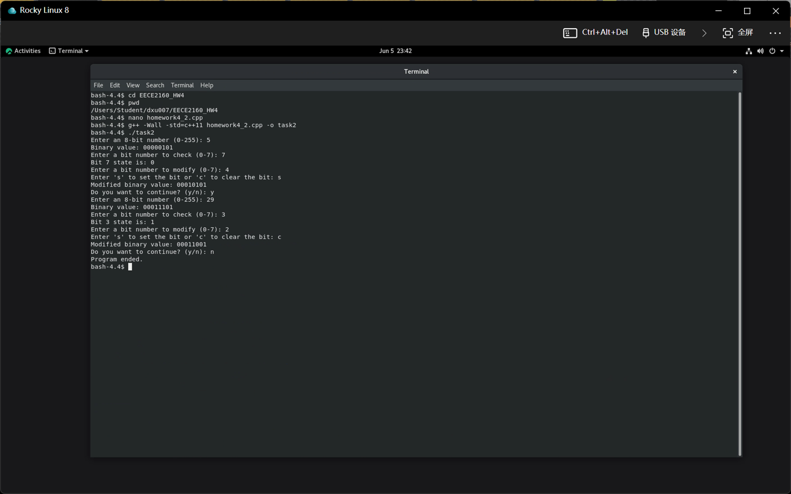

Overview项目概述
Developed an interactive C++ program that converts an 8-bit integer to binary and lets the user inspect, set, and clear individual bits, displaying the modified binary value after each operation. The program loops over multiple inputs with input validation and runs on a Rocky Linux environment.开发了一个交互式 C++ 程序，将 8 位整数转换为二进制，并允许用户检查、置位和清除单个比特，每次操作后显示修改后的二进制值。程序对多次输入进行循环并带输入校验，运行在 Rocky Linux 环境下。
Gallery图库
Click any image to enlarge.点击任意图片可放大。

Terminal session showing the C++ bit-manipulation tool checking, setting, and clearing individual bits of 8-bit values.终端会话，展示该 C++ 位操作工具对 8 位数值检查、置位和清除单个比特。